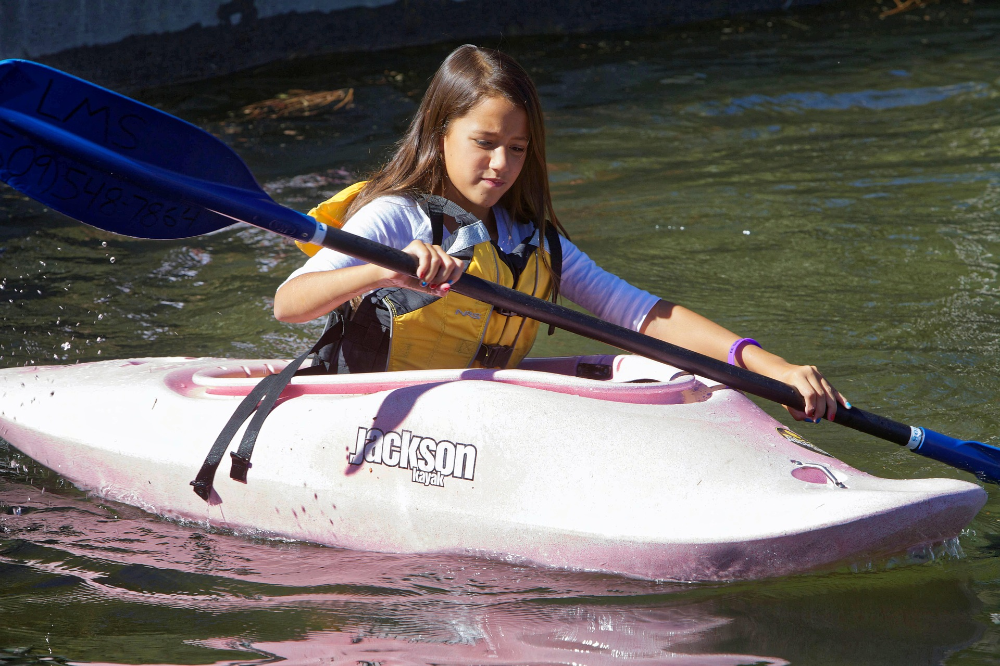

Each activity is run under the instruction of one of our highly trained staff and all safety equipment is provided. Let’s meet some of the Lochquarry staff: Name: Claire Jack Position: Centre Manager Responsible for: The overall running of the centre and all of its activities Favourite Activity: Pole climb Name: Robbie Elliot Position: Senior Instructor (Land) Responsible for: Overseeing all of the land based activities Favourite Activity: Hillwalking in the beautiful Scottish highlands Name: Marion Hunter Position: Centre Administrator Responsible for: Making bookings and arranging activity slots for groups Favourite Activity: Making sure everyone has a great time when the visit Lochquarry Our activities are very popular with youth groups including Scouts and Guides. To book your next adventure at Lochquarry, please phone 01475 229 8311.
‘The Scouts loved every second of it, especially the powerboating’ − Martin Bainbridge, Scout Leader
W3schools spaces 